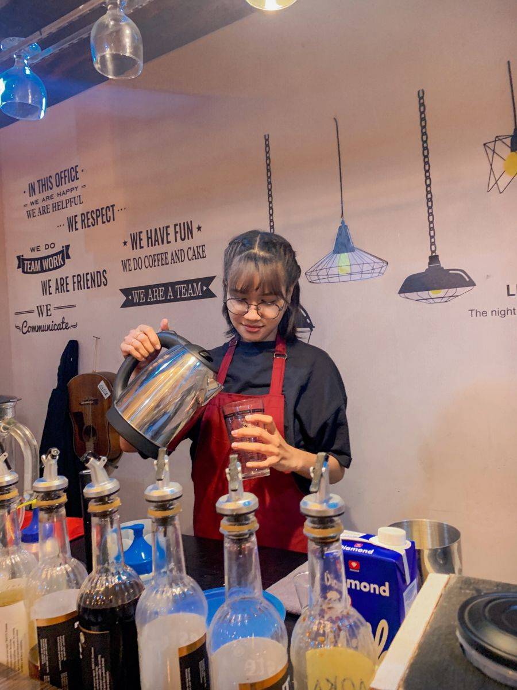
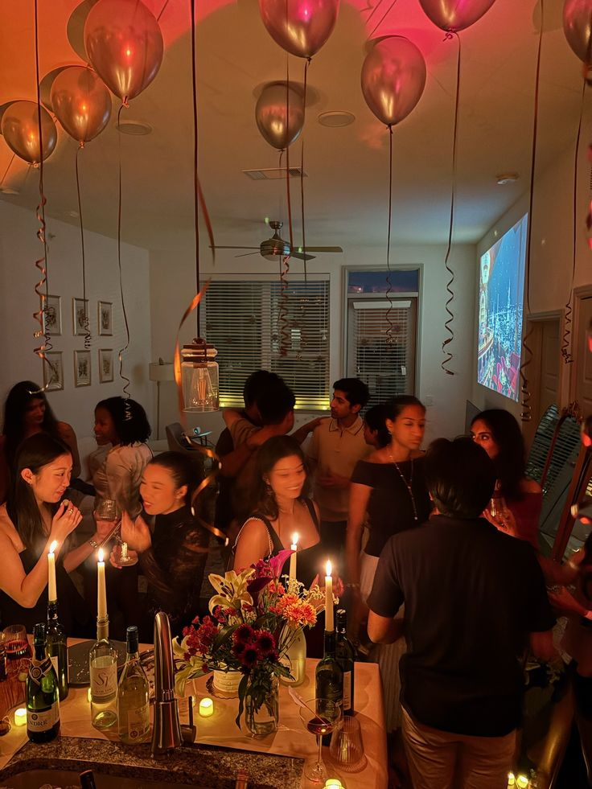

The First
Pour
It started with a simple idea: coffee isn't just a morning ritual. For the night owls, the artists, and the deep thinkers, coffee is the fuel for twilight. We roasted our first beans specifically to be enjoyed as the sun went down—smooth, low acidity, and rich with dark chocolate notes.
A Gathering
Place
We didn't just build a cafe; we built a sanctuary. The warm amber lighting, the textured walls, and the curated playlists all serve one purpose: to make you feel completely detached from the rush of the city outside.
